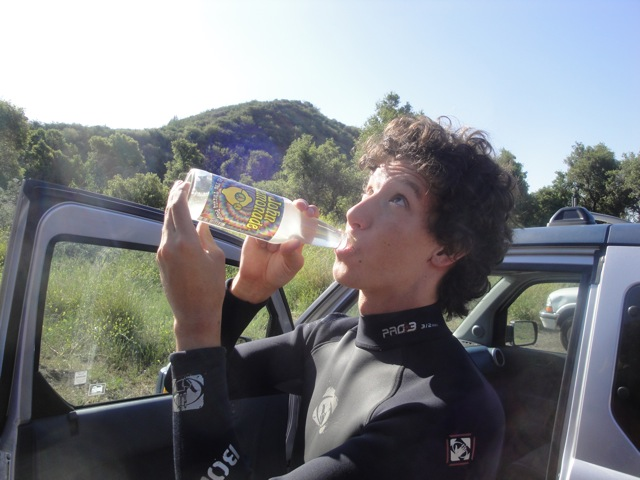
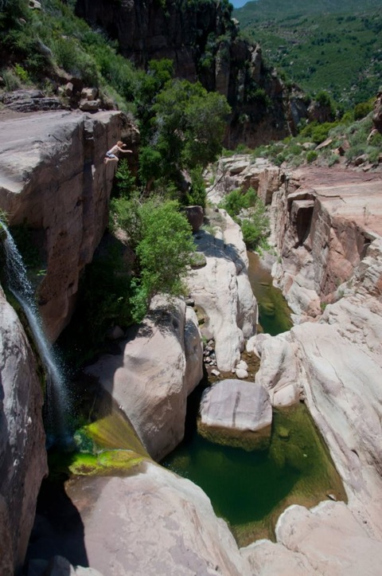

Tar Creek Falls 2012
All right. After the awesomeness of our visits to Tar Creek Falls last year, the cliff jumping season has begun and its time for us to head over to our favorite spot and our home jumping spot. Tar Creek Falls, where we're going to finally jump the 70 ftr!!!!!!
Dude!!! What the hell is up with the parking lot!!!?

"Don't worry John Lennon. I'm still thinking of all those thirsty people for you."
"GRR!!!!! I'M READY TO JUMP THAT 70 FTR RIGHT NOW!!!!!!"
All right. Time to hike on down into Tar Creek. (Ohh, its really green right now. Pretty).
No. The water is not like Chocolate Milk today. These f*cktards shown here just decided to just dirty up the water for no reason and laugh about it. And after we left, I'm guessing they all sat down in the now dirty water and circle-jerked each other.
Hello Mr. Turtle. Hows it going!!!?
Jumping the Third Cascade Pond!!!
Don't worry. You'll be jumping the 70 ftr before you know it.
Ooh. Look at the pretty flowers.
I seriously love this place.
All in all, you're just another jumper of the Wall.
I'm not sure what type of rock this is, I'm no geologist. But that does look nice.
Wee!!!! We can only jump the 50 ftr relaxed now!!!
For those who don't know, Tar Creek Falls is part of the Sespe Condor Sanctuary, and finally on visit #5, we finally saw some condors.
It's amazing how close we were able to get.
"Oh crap!!! My card is showing!!! Must fly away before the humans steal my identity!!!"
"Hey guys!!! I found another slide at Tar Creek!!!!" *evil laugh*
Well, we did it. After a year of staring at it and saying that we'd eventually do it, we did it. We jumped the 70 ftr. I honestly wasn't even planning on it as I felt that I wasn't ready, but after filming Cody and Dylan hesitate for ten minutes, I was like "Come on guys. You just jump and thats it!!! Wait a second, I can do this!!!" Then I saw Cody and Dylan jump it, and I was antsy. I just wanted to do this. And I did. I produced one hell of a scream jumping it, but I did it. You can see all of our first times jumping it in this video from Cody. And holy sh*t. Jumping the 70 ftr is incredible. I just wish the hike back up wasn't such a bitch.
In fact, it is so incredible that we came back on our second visit and marathoned the 70 ftr. Thats right. We marathoned the 70 fter in the same way that we'd marathon a coaster during ERT. And oh man, it was amazing. Now after Jump #5, I had to stop since my body was begenning to ache and marathoning this jump does put pressure on your body. But man was it amazing. Check out my video of us marathoning the 70 ftr!!!!!

Yeah. This is insane.
(Photo by Cody Kempema)
KEVIN SPLASH!!!!!!!!
(Photo by Cody Kempema)
Sometimes, you have to put your mind behind you and have it give you a push.
 Though the day was not without its tragedys. Walking back to the car, Dylan crushed a poor innocent frog to death.
Though the day was not without its tragedys. Walking back to the car, Dylan crushed a poor innocent frog to death.
And sadly, our Tar Creek Falls visits were cut short this year since it dried up SUPER EARLY this year due to the lack of snow in the winter. In fact, I only went TWICE this entire season!!! Now there was a third and final Tar Creek Visit before it dried up, but I missed that since I was in Rome. So thats ok. But its still depressing that in Early July, Tar Creek is already completely dried up. =( Oh well. I loved this season, so glad I jumped the 70 ftr, and I'm keeping my fingers crossed for a very cold and wet winter so we can have a great 2013 jumping season at Tar Creek Falls.
Home